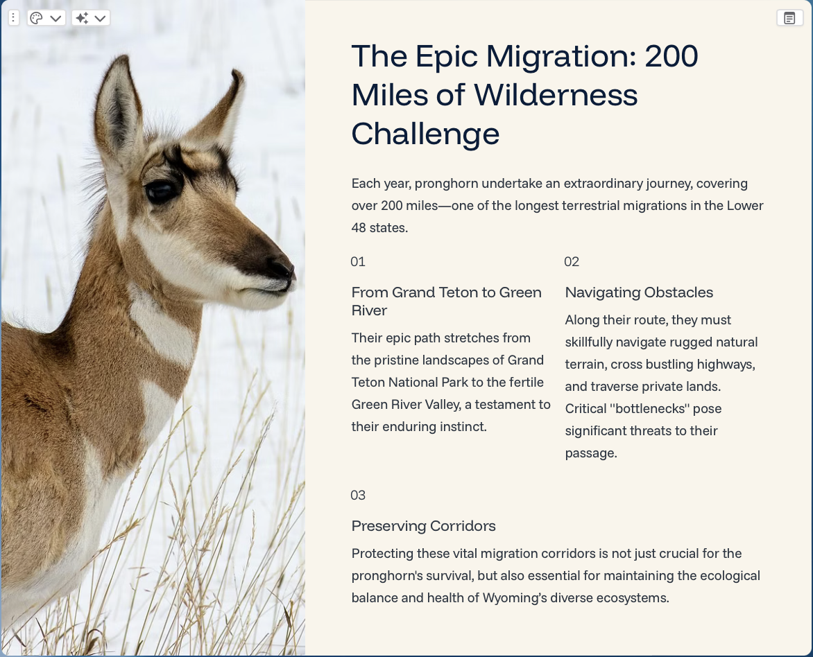
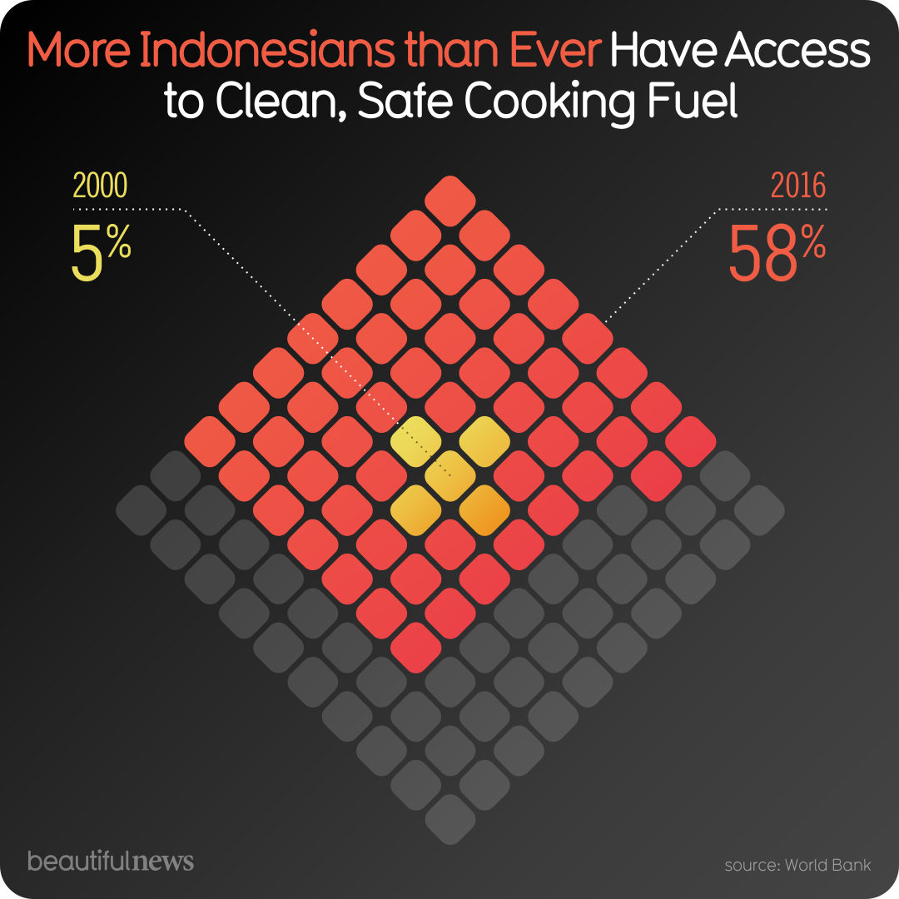
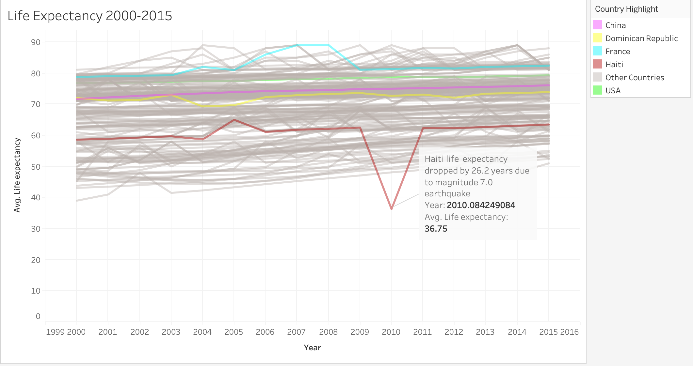

Lab 2: AI Tool Evaluation
Lab Overview
Lab 2 involved developing and using a framework to evaluate various AI tools, their uses, and their ethical ramifications. Options were given to operate with a guided framework or independent, open-ended exploration. Students were provided with a list of AI tools of various types (image generation, text generation, research, etc.) to evaluate. Students were graded on their reports of the capabilities of the AI, appropriate use of the tools, and ethical considerations. Additional considerations included: personal use in academic and professional work, context within the DCDA program, and the tool's relation to the evolving landscape of AI technology.
Reflection & Analysis
This lab was a really interesting way to understand what sorts of AI tools are out there, and it helped teach me good practices on how to analyze and determine the quality of a tool. It also showed how many AI tools are just gimmicks that don't have much of a use case. The most interesting recent revelation was the shutting down of Sora AI, one of the tools I reviewed. While somewhat interesting as a toy to play with, I just didn't see any way to use it in a meaningful way, and certainly no way for the developers to make money with it, especially with its extreme server costs. In contrast, the Gamma presentation AI tool actually seems to have many real use cases, even if they are mostly in assembling decent presentation formats quickly. I imagine that much like the dot-com bubble, there will be many AI tools that will pop up, generate hype, and then quickly disappear when they fail to find a real use case or market. Having this lab as a way of developing an analytical framework for evaluating AI tools is already proving to be helpful in navigating the modern technology landscape.
Gamma Generated Presentation Slide

Lab 3: Tufte Critique
Lab Overview
Lab 3 focused on critiquing data visualizations based on Tufte's principles of information "resolution," meaning how comprehensive and complete the graphic is regarding the information it provides. Students were given several sources to find visualizations (such as Information is Beautiful - Beautiful News) and were tasked with finding a graphic to critique based on Tufte's principles. Students were also tasked with relating their findings to "additional concerns" such as "effects without causes," "cherry-picking," "overreaching," and "rage to conclude." Final conclusions took into account Tufte's principles, additional concerns, and any extra information found from the original source of the graphic. Students were graded on the specificity of their critique, application of Tufte's principles in their critique, balance of their critique (acknowledging both strengths and weaknesses), demonstrated engagement with the source material, and quality of their final critique and portfolio page.
Critiquing data visualization based on Tufte principles.
Reflection & Analysis
This lab was a really interesting introduction to critically reviewing data visualizations. I knew some basic fundamentals of visualization design (mainly how to avoid flagrantly misleading graphics), but little beyond that. Tufte's ideals may be a bit extreme for my personal tastes, but his principles do lay out an excellent framework on how to make good visualizations. Looking through the sources (mainly Information is Beautiful), I was surprised at how many of these visually appealing graphics were not very good at conveying much information. From cluttered designs to using a large graphic to say very little, very few of the graphics passed Tufte's criteria. Having this experience of learning what makes a good visualization and being able to critically review them has been extremely helpful in designing my own visualizations for the rest of the labs and beyond.
Critiqued Graphic

Source: Beautiful News Daily
Lab 4: Tableau Visualization
Lab Overview
Lab 4 tasked students with creating an interactive graphic using Tableau Public. Encouraged to work with data they're somewhat familiar with, students were directed to explore and visualize the data, learn the software's features, and return any surprising insights. Students were graded based on their knowledge of the data, explanation of their design choices, personal evaluation of Tableau, curiosity demonstrated in their research questions, and the quality of their final visualization and portfolio page.
Reflection & Analysis
This was an interesting lab to work on! I've had some limited experience with Tableau in the past, but mostly for its ability to make maps, so I was interested in finding other ways to visualize data with it. As the previous lab focused on critiquing visualizations, I had a fairly solid idea on how to make a good one, but it was still somewhat difficult to make an easily readable visualization that also had a good amount of information. I decided upon using a line chart to map global life expectancy from 2000 to 2015. I was surprised to see the massive single-year dip in Haiti from the 2010 earthquake, so I focused the visualization around that finding. I feel the lab was a good way to get familiar both with Tableau and with the fundamentals of good visualization design. My only major issue during the process was with Tableau's web-based save system for the free version, as due to a connection error I was unable to upload my work to create an embeddable version of it, and due to some sort of client-side error, the data was corrupted and lost. Other than that, I really enjoyed using Tableau and the ease of creating interactive visualizations and maps with it.
Tableau Data Visualization

Lab 5: Vibe Coding Analysis
Lab Overview
Lab 5 was designed to demonstrate practices of AI-assisted coding and encourage students to ethically engage with these tools. The lab opens with a spectrum of AI uses, ranging from simple debugging and syntax assistance to fully unguided automation. Students were directed to carefully use the AI and demonstrate their understanding of the generated code. Students were tasked with performing two of the following three experiments: portfolio enhancement, Python code generation in data analysis, or debugging broken code with AI. Students reported on the performance and limitations of the AI tools, their personal understanding of the code, and accurately and comprehensively labeling the usage of AI.
Evaluating AI code generation and functionality.
Reflection & Analysis
This lab was a really interesting way to get familiar with the modern landscape of AI tools and their capabilities. In contrast with some of the programs for Lab 2, the AI tools for this lab were actually very useful and had many real use cases. In fact, it was so useful that it was almost detrimental at times. For instance, when designing code for the interactive map, just giving the AI a design brief of what you wanted to do was usually enough to get fully functional code that would work on the first try. While helpful, it often meant that unless I specifically went back to review code, I wouldn't actually know how any of it explicitly worked, which is a problem both for learning and for long-term codebase health (if it was a part of a larger project). In a similar vein, the AI was so good at predicting text that it would often auto-code, comment, or write up things that I was in the middle of writing in the editor. This was both distracting from the flashing pop-ups and unsettling at the accuracy of what it anticipated I would type. Overall, I think this was an excellent way of both getting used to new tools and learning how to properly and ethically use them. AI is an incredibly powerful tool, but it is equally susceptible to abuse.
Code Snippet from Dark Mode Implementation
/* This part of the code is a little beyond me as of right now. Ran it through an AI to explain line-by-line so I undertand it conceptually, but I'm still blurry on the details. */
/* Defines the styles for images within the visualization container. */
.viz-container img {
max-width: 100%; /* Responsive: never wider than container */
height: auto; /* Maintain aspect ratio */
border-radius: 8px;
box-shadow: 0 4px 6px rgba(0, 0, 0, 0.1);
margin-bottom: 0.5rem;
transition: opacity 0.3s ease; /* AI-GENERATED: Smooth dark mode transition */
}
/* This applies a transition effect to all images during the dark mode toggle. Makes the transition smoother and more pleasant to users. */
/* AI-GENERATED: Reduce image brightness in dark mode for better viewing comfort */
:root.dark-mode .viz-container img,
:root.dark-mode img {
opacity: 0.9;
}
/*Reduces opacity of images in dark mode to make them easier on the eyes and blend with the darker background. */
/* AI-GENERATED: Restore full brightness on hover in dark mode */
:root.dark-mode .viz-container img:hover,
:root.dark-mode img:hover {
opacity: 1;
}
Lab 6: Hometown Map
Lab Overview
Lab 6 tasked students with creating an interactive map of their hometown using Mapbox and Python code. The first step was to create a custom basemap using the Mapbox software and export a basemap style using Mapbox's API. Next, students chose at least ten locations in their hometown to include on the map. These ten locations had additional information associated with them, including address, type (residential, landmark, etc.), description, and an image URL of a picture of the location. This information was then compiled into a CSV. Finally, with the assistance of AI tools, students imported the base map, added interactive markers displaying location information, and saved the map as an embeddable HTML file. Students were graded on the design coherence of the basemap, map scalability, quality of their gathered data, demonstrated understanding of the code, and quality of their interactive map.
Reflection and Analysis
Lab 6 was something of a culmination of all the previous labs, integrating visual design elements, interactive functionality, and encouraging the use of AI tools to aid in development. I enjoyed the focus on our hometown and the opportunity to share personal interests or experiences that others might not know. I found it an excellent way of practicing and demonstrating all of the skills learned in previous labs, with the added bonus of getting to add a personal touch to the project. I enjoyed getting to have a more focused but more complex project to use AI for, rather than the simple task I used it for in Lab 5. Mapbox, the software used to design the basemap, was pretty difficult to work with, but with enough time and effort I was able to produce satisfactory results.